按钮
- QPushButton。
- 复选按钮与单选按钮。
- 按钮与图标。
- 快捷键。
常用的按钮组件
QAbstractButton是所有按钮组件的公共基类，实现了按钮组件的通用模型。用户界面中最常用的按钮组件都从 QAbstractButton类派生，主要有以下4种类型。
- QPushButton：常规按钮，也是用得最多的按钮类型。通过鼠标单击或快捷键触发，从而执行特定的任务。例如，单击“播放”按钮开始播放音频。
- QCheckBox：即复选按钮，可以在On和Off两种状态之间循环切换。一般用于实现多选功能，每个按钮都可以独立切换状态。某个QCheckBox按钮是否处于选中（On）状态不会影响其他QCheckBox组件。
- QRadioButton：单选按钮，实现“多选一”功能。同属于一个 QWidget或 QButtonGroup 内的QRadioButton实例之间是互斥关系，即同一时刻只能有一项被选中。
- QToolButton：工具栏按钮。它是一种特殊按钮，通常位工具栏内。在许多应用程序里，工具栏按钮只显示一个小图标。
下面代码定义了MyButton类，基类是QAbstractButton，实现了自定义按钮组件。
class MyButton(QAbstractButton):
def __init__(self, parent = None):
super().__init__(parent)
#修改调色板
p = QPalette(self.palette())
#正常状态下的颜色方案
p.setColor(QPalette.ColorGroup.Active, QPalette.ColorRole.Button,
QColor('brown'))
p.setColor(QPalette.ColorGroup.Active, QPalette.ColorRole.ButtonText,
QColor('snow'))
#禁用状态下的颜色方案
p.setColor(QPalette.ColorGroup.Disabled, QPalette.ColorRole.Button,
QColor('darkgray'))
p.setColor(QPalette.ColorGroup.Disabled, QPalette.ColorRole.ButtonText,
QColor('lightgray'))
#设置调色板
self.setPalette(p)
def paintEvent(self, e: QPaintEvent):
#从调色板中获取背景色和前景色
bgcolor = self.palette().color(QPalette.ColorGroup.Active,
QPalette.ColorRole.Button)
forecolor = self.palette().color(QPalette.ColorGroup.Active,
QPalette.ColorRole.ButtonText)
#如果按钮处于禁用状态，获取相应的背景色和前景色
if self.isEnabled() == False:
bgcolor = self.palette().color(
QPalette.ColorGroup.Disabled,
QPalette.ColorRole.Button
)
forecolor = self.palette().color(QPalette.ColorGroup.Disabled,
QPalette.ColorRole.ButtonText)
#聚焦框的颜色
focuscolor = QColor(0, 100, 255, 200)
#按钮被按下时显示的覆盖层颜色
downovcolor = QColor(204, 102, 0, 60)
#开始绘制界面
painter = QPainter(self)
#绘制背景
painter.fillRect(e.rect(), bgcolor)
#绘制按钮被按下时的覆盖层
if self.isDown():
painter.fillRect(e.rect(), downovcolor)
#绘制聚焦框
if self.hasFocus():
painter.setPen(focuscolor)
focusrect = QRect(e.rect().topLeft(),
QSize(e.rect().width() - 1,
e.rect().height() - 1))
painter.drawRect(focusrect)
#绘制文本
btntext = self.text()
if len(btntext) > 0:
#计算文本所需要的空间
txtsize = painter.fontMetrics().size(
Qt.TextFlag.TextSingleLine,
btntext,
0)
txtrect = QRect(e.rect().topLeft(), txtsize)
#移动矩形的中心坐标
txtrect.moveCenter(e.rect().center())
#设置画笔颜色为前景色
painter.setPen(forecolor)
painter.drawText(txtrect, btntext)
#结束绘图
painter.end()MyButton类在__init__ 方法中修改默认的调色板参数，上述代码提供了两组颜色方案——Active（正常状态）和Disabled（禁用状态)，随后重写了paintEvent方法，绘制自定义按钮的外观，包括背景、聚焦框、文本，以及按钮被按下时显示的覆盖层。覆盖层实际上是在背景之上绘制了一个半透明的矩形。
自定义按钮在正常状态下如图6-1所示，在禁用状态下如图6-2所示。
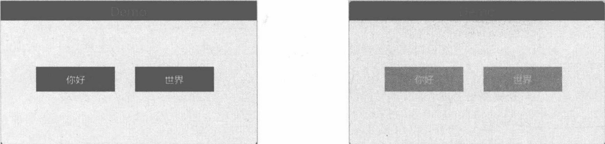
图 6-2 禁用状态下的自定义按钮
QPushButton
QPushButton 类表示普通按钮组件。该组件与用户交互的频率较高，只需单击就能激活某个命令。因此，使用 QPushButton 组件的核心是处理 clicked 信号。在鼠标左键按下和弹起的过程中，QPushButton 对象还会发出 pressed、released 信号。
这三个信号的发出顺序可以用以下代码来测试：
btn = QPushButton("Hello")
btn.pressed.connect(lambda: print("收到pressed信号"))
btn.released.connect(lambda: print("收到released信号"))
btn.clicked.connect(lambda: print("收到clicked信号"))
btn.show()代码执行后，单击一下按钮，控制台窗口将输出以下信息：收到 pressed 信号收到released信号收到clicked 信号上述实验表明：QPushButton组件被按下时会发出 pressed信号，接着释放鼠标按键，QPushButton组件发出 released信号，最后才发出 clicked 信号。这同时也说明按钮的单击操作要在鼠标按键释放之后才会被应用程序接收。若用户在QPushButton组件上按下了鼠标左键，应用程序会收到pressed信号。若此时用户没有释放左键并且把鼠标指针移到QPushButton组件之外，那么不管用户后来是否会释放鼠标左键，单击操作都会结束，并且 QPushButton组件会发出 released 信号，但不会发出 clicked信号。
6.2.1 示例：将多个按钮的 clicked 信号绑定到同一个方法
Qt的信号既可以与多个槽对象（Slots）连接，也可以将多个信号绑定到一个槽对象上。本示例将两个 QPushButton 对象的 clicked信号绑定到一个方法成员上。
MyWindow类的代码如下：
class MyWindow(QWidget):
def __init__(self, parent: QWidget = None):
super().__init__(parent)
#设置窗口标题和位置
self.setWindowTitle('Demo')
self.setGeometry(450, 500, 260, 120)
#创建两个按钮实例
self.btn1 = QPushButton('Action-1', self)
self.btn2 = QPushButton('Action-2', self)
self.btn1.setGeometry(15, 25, 70, 32)
self.btn2.setGeometry(15, 65, 70, 32)
#两个按钮的clicked信号绑定同一个方法
self.btn1.clicked.connect(self.onClicked)
self.btn2.clicked.connect(self.onClicked)
#创建标签实例
self.lb = QLabel(self)
self.lb.move(100, 30)
def onClicked(self):
#通过sender方法可以获取到是哪个按钮发出了clicked信号
currbtn = self.sender()
if isinstance(currbtn, QPushButton):
#获取按钮上显示的文本
text = currbtn.text()
self.lb.setText(f'你单击了{text}按钮')
#让标签组件自动调整大小
self.lb.adjustSize()btn1 和 btn2 按钮的 clicked 信号都与 onClicked 方法绑定。由于信号的接收对象是 MyWindow 实例(当前类的实例)，所以根据 self.sender方法的返回值可以判断出是哪个按钮发出了clicked信号。QLabel对象负责显示发送信号的按钮上的文本。
运行示例程序后，单击Action-2按钮，标签组件上会显示该按钮上的文本，如图6-3所示。
6.2.2 示例：按钮的“开关”状态
checkable属性描述按钮组件是否具有类似“开关”的功能。若将该属性设置为True，即表示开启“开关”功能。每单击一次按钮，就会切换状态——On变成Off，或者Off变成On，两种状态不断循环。
当checkable属性为True时，clicked信号会携带一个布尔（Bool）类型的参数，代表按钮的最新状态。
下面示例代码中，QPushButton 与 QLabel 组件协同工作。QPushButton 组件通过 setCheckable 方法开启checkable功能。当按钮被单击后会切换开关状态，QLabel组件中会实时显示结果。
#初始化顶层窗口
window = QWidget()
window.setWindowTitle('Demo')
window.resize(220, 125)
window.move(600, 450)
#标签组件
lb = QLabel(window)
lb.setGeometry(20, 70, 160, 36)
#按钮组件
btn = QPushButton(window)
btn.setText('测试按钮')
btn.setGeometry(20, 20, 80, 36)
btn.setCheckable(True)
btn.clicked.connect(lambda checked: onCheckChanged(lb, checked))
#显示窗口
window.show()按钮被单击时调用了onCheckChanged 函数。该函数的第一个参数是 QLabel 组件的引用，第二个参数是按钮的最新状态。onCheckChanged函数的代码如下：
def onCheckChanged(label: QLabel, checked: bool):
if checked:
label.setText('按钮处于【ON】状态')
else:
label.setText('按钮处于【OFF】状态')运行示例程序，然后单击按钮，通过 QLabel 组件可以直观地看到 checkable 状态的变化，如图 6-4 所示。
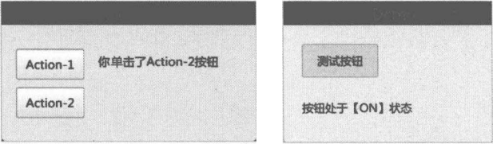
图6-4带“开关”状态的按钮
6.2.3 重复按钮
如果按钮组件的 autoRepeat 属性设置为 True(通过 setAutoRepeat 方法)，那么只要鼠标左键一直按住不放，pressed、released和clicked信号就会以一定的间隔循环发出。此时，按钮组件可以实现重复执行某项任务的功能，即重复按钮。
重复发出信号的时间间隔可以通过 setAutoRepeatInterval方法设置，单位为 ms（毫秒)。另外，调用setAutoRepeatDelay 方法可以设置按钮组件启动重复操作的延迟时间，单位也是ms。
6.2.4 示例：使用重复按钮调整矩形的宽度
本示例将实现用 QPushButton组件来“递增”和“递减”矩形的宽度。将 autoRepeat属性设置为True，使QPushButton组件成为重复按钮，只要鼠标左键按住不放，就可以实现连续调整矩形的宽度。
首先定义一个RectWidget类，表示一个矩形组件，代码如下：
class RectWidget(QWidget):
def __init__(self, parent:QWidget = None):
super().__init__(parent)
#设置此组件的最小尺寸
self.setMinimumSize(50, 50)
#设置此组件的最大尺寸
self.setMaximumSize(250, 100)
#绘制组件内容
def paintEvent(self, event: QPaintEvent):
#用红色画刷填充矩形区域
painter = QPainter(self)
painter.fillRect(event.rect(), QColor("red"))
painter.end() #结束绘制
#当组件的大小改变时重新绘制内容
def resizeEvent(self, event: QResizeEvent):
self.update()setMinimumSize方法设置组件的最小尺寸（包括宽度和高度)，setMaximumSize方法设置组件的最大尺寸。在调整组件大小时，其宽度和高度不能小于最小尺寸，同时不能大于最大尺寸。如果设置的尺寸小于最小尺寸，则Qt程序会强制使用最小尺寸来设置组件的大小；同样，如果设置的尺寸大于最大尺寸，Qt程序会强制使用最大尺寸来调整组件的大小。
重写paintEvent方法，使用红色画刷填充组件的可视区域；重写resizeEvent方法，当矩形组件的大小被调整后，及时重新绘制其可视区域（调用update方法）。
接着定义MyWindow类，作为自定义窗口。该窗口上半部放置两个QPushButton组件，分别用于递减和递增矩形组件的宽度。窗口的下半部分放置一个RectWidget组件，呈现一个红色背景的矩形。
MyWindow类的代码如下：
class MyWindow(QWidget):
def __init__(self, parent: QWidget = None):
super().__init__(parent)
self.resize(300, 260)
self.setWindowTitle('Demo')
#布局
self.layout = QGridLayout(self)
self.layout.setSpacing(10)
self.btnA = QPushButton("宽度递减")
self.btnA.clicked.connect(self.onDecreaseWidth)
self.btnB = QPushButton("宽度递增")
self.btnB.clicked.connect(self.onIncreaseWidth)
self.layout.addWidget(self.btnA, 0, 0)
self.layout.addWidget(self.btnB, 0, 1)
self.rectObj = RectWidget()
self.layout.addWidget(self.rectObj, 1, 0, 1, 2)
#开启按钮组件的重复功能
self.btnA.setAutoRepeat(True)
self.btnB.setAutoRepeat(True)
#设置重复延迟
self.btnA.setAutoRepeatDelay(1000)
self.btnB.setAutoRepeatDelay(1000)
#设置重复间隔
self.btnA.setAutoRepeatInterval(200)
self.btnB.setAutoRepeatInterval(200)
def onDecreaseWidth(self):
#获取最小宽度
minWidth = self.rectObj.minimumWidth()
#获取当前宽度
currwidth = self.rectObj.width()
#减少宽度（不能小于最小宽度）
currwidth = currwidth - 10
if currwidth < minWidth:
currwidth = minWidth
#更新组件尺寸
self.rectObj.resize(currwidth, self.rectObj.height())
def onIncreaseWidth(self):
#获取最大宽度
maxwidth = self.rectObj.maximumWidth()
#获取当前宽度
currwidth = self.rectObj.width()
#增加宽度
currwidth += 10
#宽度不能超过最大值
if currwidth > maxwidth:
currwidth = maxwidth
#更新组件尺寸
self.rectObj.resize(currwidth, self.rectObj.height())在本示例中，两个按钮的重复操作会延迟1000ms（1s）执行，重复间隔为200ms。主要通过以下4行代码来设置。
self.btnA.setAutoRepeatDelay(1000)
self.btnB.setAutoRepeatDelay(1000)
self.btnA.setAutoRepeatInterval(200)
self.btnB.setAutoRepeatInterval(200)示例运行后，可通过窗口上的两个按钮来改变矩形宽度。长按可实现连续调整，每次调整都会递减(或递增）10像素。效果如图6-5所示。
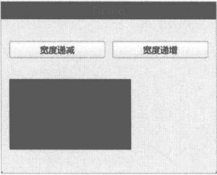
6.2.5 示例：带下拉菜单的按钮
QPushButton 类有一个 setMenu 方法，用于为 QPushButton 对象设置一个 QMenu 实例。方法调用后，按钮的右侧将显示一个下拉箭头。单击下拉箭头会弹出上下文菜单。
本示例演示了一个带下拉菜单的按钮组件，单击下拉箭头后会出现“打开文件”“保存文件”“转换格式”菜单。
示例窗口类的代码如下：
class CustWindow(QWidget):
def __init__(self, parent: QWidget = None):
super().__init__(parent)
self.setGeometry(400, 500, 200, 150)
self.setWindowTitle('Demo')
self.btn = QPushButton('菜单按钮', self)
self.btn.setGeometry(20, 25, 80, 36)
#创建菜单
menu = QMenu(self)
#添加菜单项
menu.addAction('打开文件',self.onOpen)
menu.addAction('保存文件',self.onSave)
menu.addAction('转换格式',self.onConv)
#设置菜单
self.btn.setMenu(menu)
def onOpen(self):
QMessageBox.information(
self, "Demo", "你选择了【打开文件】菜单",
QMessageBox.StandardButton.Ok
)
def onSave(self):
QMessageBox.information(
self, "Demo", "你选择了【保存文件】菜单",
QMessageBox.StandardButton.Ok
)
def onConv(self):
QMessageBox.information(
self, "Demo", "你选择了【转换格式】菜单",
QMessageBox.StandardButton.Ok
)QMenu类表示菜单组件，可通过addAction方法添加菜单项。菜单项一般显示文本标签、图标（可选）和快捷按键（可选）。菜单项的功能与按钮相似，用户选择菜单项后会执行某个操作（或运行某个任务)。为了实现交互，菜单项还需要绑定一个可供程序调用的函数(或方法成员)。当用户选择某个菜单项后，与之绑定的函数（或方法成员）就会被调用。
在本示例中，“打开文件”菜单项绑定onOpen方法；“保存文件”菜单项绑定onSave方法；“转换格式”菜单项绑定的是 onConv方法。这三个方法都是CustWindow类的实例成员。
运行示例程序后，用单击按钮组件右侧的下拉箭头，会弹出菜单列表，如图6-6所示。
单击执行其中一个菜单项，应用程序会弹出如图6-7所示的消息对话框。
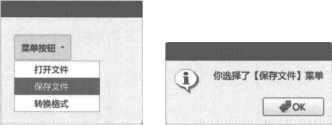
图 6-7 弹出消息对话框
QCheckBox
QCheckBox组件表示复选框，可用于“开启”或“关闭”某项程序功能。例如，可以用QCheckBox组件实现供用户选择“是否自动更新应用程序”。每个QCheckBox实例的选择状态都是独立的，互不影响。
通常，QCheckBox组件有两种状态：Checked表示组件已选中，Unchecked表示组件未选中。可以调用 isChecked 方法以确定 QCheckBox组件是否已选中，它返回一个布尔值，True表示选中，False表示未选中。要修改QCheckBox组件的选择状态，应调用 setChecked方法。
另外，如果需要，还可以通过setTristate方法开启“第三状态”，即PartiallyChecked状态。此状态介于选中与不选中之间，其含义为“不明确的状态”。
QCheckBox组件的三种状态如图6-8所示。
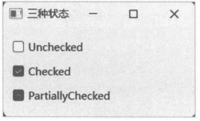
6.3.1 示例：请选择你喜欢的早餐
本示例演示了QCheckBox 组件的基础用法。窗口上将放置6个QCheckBox组件，分别代表6种早餐，用户可以选择自己喜欢的早餐。
示例代码如下：
from PySide6.QtCore import*
from PySide6.QtGui import*
from PySide6.QtWidgets import*
#初始化应用程序对象
app = QApplication()
#初始化窗口
win = QWidget()
win.setWindowTitle("选择你喜欢的早餐")
win.move(600, 450)
# 6个 QCheckBox 组件
cb1 = QCheckBox("蒸面", win)
cb2 = QCheckBox("馒头", win)
cb3 = QCheckBox("三明治", win)
cb4 = QCheckBox("炒米粉", win)
cb5 = QCheckBox("小米粥", win)
cb6 = QCheckBox("水饺", win)
#按钮
btnSubmet = QPushButton("提交", win)
#与按钮的clicked信号连接的函数
def onClicked():
#收集被选中的QCheckBox组件上的文本
list =[]
if cb1.isChecked():
list.append(cb1.text())
if cb2.isChecked():
list.append(cb2.text())
if cb3.isChecked():
list.append(cb3.text())
if cb4.isChecked():
list.append(cb4.text())
if cb5.isChecked():
list.append(cb5.text())
if cb6.isChecked():
list.append(cb6.text())
msg = "你喜欢的早餐有：" + "、".join(list)
#显示对话框
QMessageBox.information(win,"提示",msg)
btnSubmet.clicked.connect(onClicked)
#网格布局
layout = QGridLayout(win)
#将各组件放进布局
layout.addWidget(cb1, 0, 0)
layout.addWidget(cb2, 0, 1)
layout.addWidget(cb3, 0, 2)
layout.addWidget(cb4, 1, 0)
layout.addWidget(cb5, 1, 1)
layout.addWidget(cb6, 1, 2)
layout.addWidget(btnSubmet, 2, 0, 1, 3)
#显示窗口
win.show()
#进入事件循环
QGuiApplication.exec()在与“提交”按钮的 clicked 信号绑定的函数内，先创建一个空白的列表对象，随后依次验证 6 个 QCheckBox 对象的 isChecked 方法以确定是否被选中。如果 isChecked 方法返回 True，就把相关 QCheckBox 对象的文本添加到列表中。最后用 join 方法把列表中的所有元素以“、”为分隔符串联成单个字符串实例。QMessageBox 类负责弹出消息对话框。
运行示例程序，通过单击选择喜欢的早餐，如图6-9所示，然后单击“提交”按钮，应用程序会弹出选择结果，如图6-10所示。
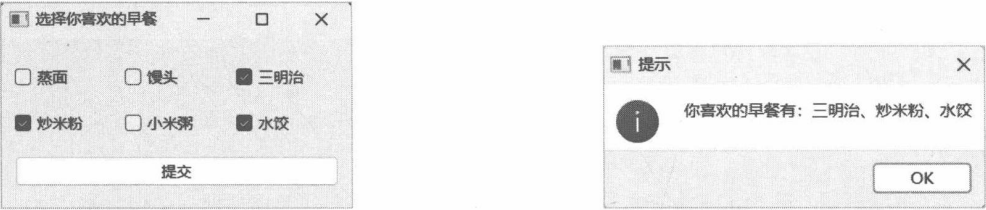
图 6-10 显示选择结果
6.3.2 示例：让 QCheckBox 对象之间相互排斥
QCheckBox组件的对象实例之间相互独立，默认情况下，组件实例之间的选择状态不会相互排斥(同一时刻只能有一个QCheckBox对象被选中)。如果需要让QCheckBox对象之间产生互斥关系，只能搭配使用QButtonGroup类。该类仅用于管理按钮之间的状态，它自身不会呈现任何可视化内容（不可见)。默认情况下，QButtonGroup对象内的按钮对象之间是相互排斥的。
QButtonGroup 类通过 addButton 方法添加按钮对象，方法参数接受 QAbstractButton 类型的引用。QCheckBox 是 QAbstractButton 的派生类，因此可以添加到 QButtonGroup 对象中。当 QButtonGroup 对象内某个 QCheckBox 的状态改变时会发出 buttonToggled 信号。该信号包含两个参数：第一个参数是QAbstractButton类型，表示已更改状态的按钮（本示例中是QCheckBox对象)；第二个参数的值是布尔类型，若为 True 表示 QCheckBox 对象被选中，False 表示 QCheckBox 对象未被选中。
下面是自定义窗口类DemoWindow的实现代码：
class DemoWindow(QWidget):
def __init__(self, parent: QWidget = None):
super().__init__(parent)
self.setWindowTitle("互斥的QCheckBox")
self.move(500, 360)
#初始化用户界面
self.initUI()
def initUI(self):
#创建QCheckBox列表
checkBoxes = [
QCheckBox("test item 1"),
QCheckBox("test item 2"),
QCheckBox("test item 3"),
QCheckBox("test item 4"),
]
#布局
self.layout = QVBoxLayout(self)
for c in checkBoxes:
self.layout.addWidget(c)
#添加一个标签组件
self._lb = QLabel()
self.layout.addStretch(0)
self.layout.addWidget(self._lb)
#创建 QButtonGroup 实例
self.btnGroup = QButtonGroup(self)
#将 QCheckBox 对象都添加到 QButtonGroup 对象中
for c in checkBoxes:
self.btnGroup.addButton(c)
#连接信号
self.btnGroup.buttonToggled.connect(self.onToggled)
def onToggled(self, button, checked):
if checked:
self._lb.setText(f'已选择：{button.text()}')initUI方法的功能是初始化窗口组件内的可视化对象。其中，4个QCheckBox实例是通过列表对象来创建的，再通过 for 循环将它们分别添加到 QVBoxLayout 布局对象和 QButtonGroup 对象中。同时将 onToggled 方法成员与 QButtonGroup 对象的 buttonToggled 信号建立连接，当 QButtonGroup 中任何 QCheckBox 对象的选择状态发生改变后都会发出 buttonToggled 信号，进而调用 onToggled 方法。onToggled方法中，button参数表示已更新状态的 QCheckBox 对象，checked参数表示该QCheckBox对象是否处于被选中状态。如果是，就在 QLabel组件中显示它的文本内容。
示例的运行效果如图6-11所示。
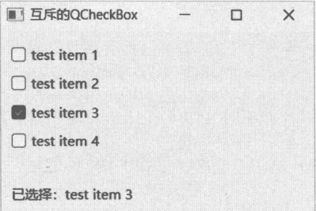
QRadioButton
QRadioButton组件与QCheckBox组件的使用方法基本一致，它们的区别在于选择行为上。QRadioButton组件是“单选按钮”——同一分组下的QRadioButton列表在同一时刻只能选中一项。因此，QRadioButton对象之间是互斥关系。
QRadioButton组件有两种分组方式。
- 通过父级的 QWidget 对象来分组。位于同一个 QWidget 对象内的 QRadioButton 对象将视为同一分组，它们之间的选择状态为互斥关系。
- 通过 QButtonGroup 对象分组。处于同一 QButtonGroup 对象内的 QRadioButton 对象之间为互斥关系，而处于不同 QButtonGroup 对象的 QRadioButton 对象之间相互独立。
当QRadioButton组件的选择状态发生改变后会发出 toggled信号，连接此信号能使应用程序及时响应 QRadioButton 组件的状态更改。也可以直接访问 isChecked 方法来获得 QRadioButton 组件的当前状态。
6.4.1 示例：使用 QGroupBox 为 QRadioButton 列表分组
QRadioButton 对象列表可通过父级的 QWidget 对象进行分组，比较常用的是 QGroupBox 组件。QGroupBox组件会在可视区域的左上角呈现文本标签。
下面是本示例的主要代码：
#设置窗口参数
window.setWindowTitle("单选按钮分组示例")
window.move(460, 385)
#创建窗口的布局
mainLayout = QHBoxLayout()
window.setLayout(mainLayout)
#第一个QRadioButton 分组
group1 = QGroupBox("第一组")
mainLayout.addWidget(group1)
#添加三个 QRadioButton 组件实例
_g1Layout = QVBoxLayout()
#此布局用于三个QRadioButton组件
group1.setLayout(_g1Layout)
for i in range(1, 4):
r = QRadioButton(f'选项-{i}')
_g1Layout.addWidget(r)
#调用 addStretch，使三个QRadioButton 能对齐到布局的顶部
_g1Layout.addStretch(1)
#第二个 QRadioButton 分组
group2 = QGroupBox("第二组")
mainLayout.addWidget(group2)
#用于QRadioButton 组件列表的布局
_g2Layout = QVBoxLayout()
group2.setLayout(_g2Layout)
#添加四个 QRadioButton 组件实例
for i in range(4, 8):
r = QRadioButton(f'选项-{i}')
_g2Layout.addWidget(r)
_g2Layout.addStretch(1)本示例先创建一个QWidget实例 window，作为应用程序的主窗口。接着使用布局类QHBoxLayout，让两个QGroupBox组件水平排列。其中，第一个QGroupBox中包含三个QRadioButton组件，第二个QGroupBox中包含四个QRadioButton组件。
示例运行效果如图6-12所示。
第一组中三个QRadioButton组件之间是相互排斥的，第二组中四个QRadioButton组件之间也是相互排斥的。但“选项-3”与“选项-4”之间并不排斥，它们可以同时被选中，因为它们属于不同的分组。
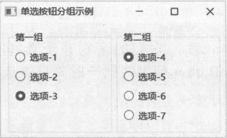
6.4.2 示例：使用 QButtonGroup 类为 QRadioButton 分组
当所有 QRadioButton 对象都位于同一个容器（同一个 QWidget 组件）内时，就需要使用 QButtonGroup类来为 QRadioButton 列表分组。
下面是本示例的核心代码：
#顶层窗口
window = QWidget()
......
#窗口的子级组件使用垂直布局
rootLayout = QVBoxLayout(window)
#--- 第一个分组 ---rootLayout.addWidget(QLabel("1. 黄河全长多少千米？"))#三个选项
op1 = QRadioButton("3856", window)
op2 = QRadioButton("5464", window)
op3 = QRadioButton("4500", window)
rootLayout.addWidget(op1)
rootLayout.addWidget(op2)
rootLayout.addWidget(op3)
#用于第一个分组的 QButtonGroup 对象
group1 = QButtonGroup(window)
#将上面三个QRadioButton 对象添加进来
group1.addButton(op1)
group1.addButton(op2)
group1.addButton(op3)
......
#--- 第二个分组 ---rootLayout.addWidget(QLabel("2. “泗水之战”发生在哪个朝代?"))#三个选项
op4 = QRadioButton("东晋", window)
op5 = QRadioButton("北宋", window)
op6 = QRadioButton("西汉", window)
rootLayout.addWidget(op4)
rootLayout.addWidget(op5)
rootLayout.addWidget(op6)
#用于第二个分组的QButtonGroup 对象
group2 = QButtonGroup(window)
group2.addButton(op4)
group2.addButton(op5)
group2.addButton(op6)op1、op2、op3 为第一个分组，由 group1（引用 QButtonGroup 实例的变量，下文中的 group2变量亦然）管理；op4、op5、op6为一组，由group2管理。
示例的运行效果如图6-13所示。
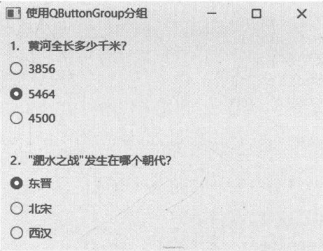
按钮分组
在前面的示例中已使用过 QButtonGroup类，相信读者对其并不陌生。QButtonGroup对象不会在用户界面呈现任何内容，它仅在逻辑层面上对按钮进行分组。QButtonGroup对象集中接收分组内各按钮的pressed、released、clicked和 toggled信号，整理后再发出新的信号。依据对按钮实例的引用方式，可以把QButtonGroup发出的信号分为两类，详见表 6-1。
| 按钮的引用方式 | 信号 | QAbstractButton 信号 |
|---|---|---|
| 对象实例 | buttonPressed(QAbstractButton) | pressed() |
| buttonReleased(QAbstractButton) | released() | |
| buttonClicked(QAbstractButton) | clicked(bool) | |
| buttonToggled(QAbstractButton, bool) | toggled(bool) | |
| 自定义的ID | idPressed(int) | pressed() |
| idReleased(int) | released() | |
| idClicked(int) | clicked(bool) | |
| idToggled(int, bool) | toggled(bool) |
以“button”开头的信号都带有一个QAbstractButton类型的参数，表示触发信号的原始按钮的实例，即以对象实例来区分用户正在操作的按钮。
以“id”开头的信号都带有一个int类型的参数，表示按钮对象的编号（ID)，用于区分用户正在操作的按钮。此ID 在调用 addButton方法时由开发者自定义，默认值是-1。如果在调用 addButton 方法时没有为按钮分配ID，也可以在添加按钮后通过setId方法来分配。
6.5.1 示例：修改矩形的颜色
本示例将在QButtonGroup对象中添加三个按钮，分别代表“红色”“绿色”“天蓝色”。单击按钮可以设置矩形的颜色。
下面是 DemoWindow类的实现代码：
class DemoWindow(QWidget):
def __init__(self, parent: QWidget = None):
super().__init__(parent)
#窗口的基本设定
self.setWindowTitle("Demo")
self.move(399, 505)
#网格布局
rootLayout = QGridLayout()
self.setLayout(rootLayout)
#一个默认组件，代表一个矩形
self._rect = QWidget(self)
self._rect.setMaximumSize(80, 80)
#设置初始样式表
self._rect.setStyleSheet("background-color: black")
#放在网格的左列
rootLayout.addWidget(self._rect, 0, 0, 3, 1)
#添加三个按钮
self._btnRed = QPushButton("红色", self)
self._btnGreen = QPushButton("绿色", self)
self._btnSkyblue = QPushButton("天蓝色", self)
#将三个按钮添加到网格布局中
rootLayout.addWidget(self._btnRed, 0, 1)
rootLayout.addWidget(self._btnGreen, 1, 1)
rootLayout.addWidget(self._btnSkyblue, 2, 1)
#创建QButtonGroup 对象
btnGroup = QButtonGroup(self)
#将三个按钮放进分组
btnGroup.addButton(self._btnRed)
btnGroup.addButton(self._btnGreen)
btnGroup.addButton(self._btnSkyblue)
#连接信号
btnGroup.buttonClicked.connect(self.onButtonClicked)
def onButtonClicked(self, button: QAbstractButton):
#根据被单击的按钮来改变_rect组件的颜色
if button is self._btnRed:
self._rect.setStyleSheet("background-color: red")
if button is self._btnGreen:
self._rect.setStyleSheet("background-color: green")
if button is self._btnSkyblue:
self._rect.setStyleSheet("background-color: skyblue")QButtonGroup对象只是一个虚拟容器，它不会生成任何可视化元素，因此三个按钮在窗口上的布局仍需要 QGridLayout 类。buttonClicked 信号与 onButtonClicked 方法建立了连接，当任意按钮被单击时 QButtonGroup 对象就会发出此信号。在 onButtonClicked方法中，将方法参数传递的按钮实例与引用三个按钮的变量（_btnRed、btnGreen、btnSkyblue）进行比较，以确定用户单击了哪个按钮。
本示例使用了 QSS(Qt Style Sheets，Qt 样式表)来设置组件的背景颜色。它的格式与 CSS(CascadingStyle Sheets，层叠样式表）相似。
background-color: <color>运行示例程序，左侧的矩形对象默认初始化为黑色，单击窗口右侧的按钮可以改变矩形的背景颜色，如图6-14所示。
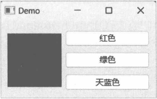
6.5.2 示例：调整 QLabel 组件的字体大小
QButtonGroup还可以通过id来区分用户所操作的按钮组件。对应的信号为idPressed、idReleased、idClicked 和idToggled。QButtonGroup 对象在发出这些信号时会携带按钮的 id。同一分组中所有按钮的id不能重复，id值是整数值，可以自定义。
本示例将使用一组 QRadioButton 组件来修改 QLabel 组件的字体大小，要连接的信号是 idToggled。与该信号连接的函数（或方法成员）一般会声明两个参数—分别用于接收按钮id和按钮的状态（True表示已选中，False表示未选中)。
下面的代码实现自定义窗口类。
class Demo(QWidget):
def __init__(self, parent: QWidget = None):
super().__init__(parent)
self.setWindowTitle("Demo App")
self.resize(300, 160)
#布局
rootLayout = QHBoxLayout()
self.setLayout(rootLayout)
#子布局
leftLayout = QVBoxLayout()
#创建4个单选按钮
opt1 = QRadioButton("12 pt", self)
opt2 = QRadioButton("16 pt", self)
opt3 = QRadioButton("24 pt", self)
opt4 = QRadioButton("32 pt", self)
leftLayout.addWidget(opt1)
leftLayout.addWidget(opt2)
leftLayout.addWidget(opt3)
leftLayout.addWidget(opt4)
leftLayout.addStretch(1)
#嵌套父子布局
rootLayout.addLayout(leftLayout)
#创建 QButtonGroup 实例
self.btnGroup = QButtonGroup(self)
#将4个单选按钮放入分组中
self.btnGroup.addButton(opt1, 601)
self.btnGroup.addButton(opt2, 602)
self.btnGroup.addButton(opt3, 603)
self.btnGroup.addButton(opt4, 604)
#连接信号
self.btnGroup.idToggled.connect(self.onToggled)
#创建QLabel实例
self.lbTest = QLabel("示例文本", self)
#将 QLabel组件添加到布局中
rootLayout.addWidget(self.lbTest, 1, Qt.AlignmentFlag.AlignHCenter)__init__方法初始化窗口上的组件和布局。在本示例中，添加到QButtonGroup对象中的按钮将使用自定义id（601、602、603、604)。
下面是 onToggled方法的实现代码，它与 QButtonGroup.idToggled 信号连接。
def onToggled(self, id, checked):
if checked:
style = 'font-size:'
#通过id来区别按钮
if id == 601:
style += "12pt"
elif id == 602:
style += "16pt"
elif id == 603:
style += "24pt"
elif id == 604:
style += "32pt"
else:
style += "12pt"
#设置 QLabel 组件的字体大小
self.lbTest.setStyleSheet(style)若 checked参数为 True，表示按钮的当前处于选中状态。然后用 if语句分析 id参数的值。假设 id为603，根据示例上下文，字体大小为24pt，因此产生的样式字符串为：
font-size: 24pt最后调用 setStyleSheet 方法为 QLabel 组件设置样式表(Qt Style Sheet)。
运行示例程序，单击窗口上的单选按钮来调整字体大小，如图6-15所示。
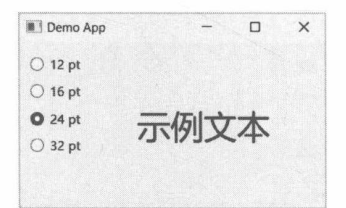
在按钮上显示图标
QAbstractButton 类公开 icon 属性（对应的方法成员是 icon 和 setIcon），可以为按钮组件设置图标，图标用 QIcon 类表示。QIcon 实例的图标数据可以从现有的 QPixmap 对象或文件中加载。图标的大小由系统的默认主题决定，也可以调用 setIconSize 方法手动设置。
QIcon类可以设置多个图标资源，可视化组件可根据当前状态选择呈现对应的图标。QIcon.Mode枚举定义了这些状态。
- Normal：组件的常规状态——用户未与组件交互且组件处于可用状态。
- Disabled：图标所在的组件被禁用。
- Active：组件处于活动状态，例如用户将鼠标指针悬停在组件上。
- Selected：图标所在的组件处于选定状态，例如列表组件的子项。
另外，当按钮组件将 checkable属性设置为 True（通过调用 setCheckable方法）后，就具有“开关”状态。为此，QIcon.State枚举补充了两个值。
- On：按钮处于 Checked 状态。
- Off: 按钮处于 Unchecked 状态。
需要注意的是，就目前的 Qt 版本而言，QIcon.State 枚举的值对 QCheckBox 和 QRadioButton 组件是无效的——因为默认样式在绘制图标时忽略了QIcon.State的值。下面是 Qt的源代码片段（C++代码)。
void QCommonStyle::drawControl(
ControlElement element,
const QStyleOption *opt,
QPainter *p,
const QWidget *widget
) const Q_D(const QCommonStyle);
switch(element) {
.....
case CE_PushButtonLabel:
if(!button->icon.isNull()){
//Center both icon and text
QIcon::Mode mode = button->state & State_Enabled ? QIcon::Normal :
QIcon::Disabled;
if(mode == QIcon::Normal && button->state & State_HasFocus)
mode = QIcon::Active;
QIcon::State state = QIcon::Off;
if(button->state & State_On)
state = QIcon::On;
..
if(button->state & (State_On | State_Sunken))
iconRect.translate(proxy()->pixelMetric(PM_ButtonShiftHorizontal,
opt, widget), proxy()->pixelMetric(PM_ButtonShiftVertical, opt, widget));
p->drawPixmap(iconRect, pixmap);
} else {
tf |= Qt::AlignHCenter;
if(button->state & (State_On | State_Sunken))
textRect.translate(proxy()->pixelMetric(PM_ButtonShiftHorizontal, opt,
widget), proxy()->pixelMetric(PM_ButtonShiftVertical, opt, widget));
proxy()->drawItemText(p, textRect, tf, button->palette, (button->state &
State_Enabled), button->text, QPalette::ButtonText);
break;
......case CE_RadioButtonLabel:
case CE_CheckBoxLabel:
if(const QStyleOptionButton *btn = qstyleoption_cast<const QStyleOptionButton
*>(opt)) {
......
if(!btn->icon.isNull()) {
pix = btn->icon.pixmap(btn->iconSize, p->device()->devicePixelRatio(),
btn->state & State_Enabled ? QIcon::Normal : QIcon::Disabled);
proxy()->drawItemPixmap(p, btn->rect, alignment, pix);
if(btn->direction == Qt::RightToLeft)
textRect.setRight(textRect.right() - btn->iconSize.width() - 4);
else
textRect.setLeft(textRect.left() + btn->iconSize.width() + 4);
.....
}
break;
......常量 CE_PushButtonLabel表示绘制 QPushButton 组件的标签部分（包括文本和图标）；CE_RadioButtonLabel、CE_CheckBoxLabel 分别表示绘制 QCheckBox 和 QRadioButton 组件的标签部分。由上述源代码可知，绘制QPushButton 组件的标签时是考虑 QIcon.State枚举的，而绘制QCheckBox和QRadioButton组件的标签时仅考虑 QIcon.Mode 枚举。
6.6.1 示例：带图标的按钮
本示例将演示带图标的QPushButton组件，也是带图标按钮的最基本用法。下面的代码实现DemoWindow类，作为示例程序的主窗口。
class DemoWindow(QWidget):
def __init__(self, parent: QWidget = None):
super().__init__(parent)
#设置窗口标题
self.setWindowTitle("带图标的按钮")
#布局
rootLayout = QVBoxLayout()
self.setLayout(rootLayout)
#按钮
btn1e = QPushButton(QIcon('01.png'), "按钮1：常规", self)
rootLayout.addWidget(btn1e)
btn1d = QPushButton(QIcon('01.png'), "按钮1：禁用", self)
btn1d.setEnabled(False)
rootLayout.addWidget(btn1d)
rootLayout.addSpacing(20)
btn2e = QPushButton(QIcon('02.png'), "按钮2：常规", self) rootLayout.addWidget(btn2e)
btn2d = QPushButton(QIcon('02.png'), "按钮2：禁用", self)
btn2d.setEnabled(False)
rootLayout.addWidget(btn2d)
rootLayout.addSpacing(20)
btn3e = QPushButton(QIcon('03.png'), "按钮3：常规", self)
rootLayout.addWidget(btn3e)
btn3d = QPushButton(QIcon('03.png'), "按钮3：禁用", self)
btn3d.setEnabled(False)
rootLayout.addWidget(btn3d)上述代码在窗口组件中创建了6个按钮。其中，第一个按钮使用图像文件01.png作为图标，第二个按钮使用02.png文件。它们使用相同的图标，不同点在于第一个按钮是常规状态，第二个按钮是禁用状态（调用setEnabled(False)禁用组件）。后面4个按钮也类似。这是为了能直观地对比出图标在常规状态和禁用状态下的外观差异。
运行结果如图6-16所示。
通过该示例会发现，QIcon类默认会根据当前主题自动处理图标。在本示例中，当按钮处于禁用状态时，图标自动变成灰色。
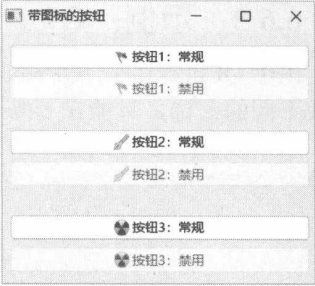
6.6.2 示例：为“禁用”状态自定义图标
QIcon 类提供 addFile 方法，可以为不同的组件状态添加自定义图标。本示例将为 QPushButton 组件提供两个自定义图标，对应常规（Normal）和禁用（Disabled）状态。
主窗口类的实现代码如下：
class MyWindow(QWidget):
def __init__(self, parent: QWidget = None):
super().__init__(parent)
self.setWindowTitle("Demo")
#按钮
self.btn = QPushButton(self)
self.btn.setText("请单击这里")
self.btn.setGeometry(25, 30, 125, 28)
#创建图标
icon = QIcon()
#添加不同状态下的图像文件
icon.addFile("cut.png", QSize(32, 32), QIcon.Mode.Normal)
icon.addFile("cut_disabled.png", QSize(32, 32), QIcon.Mode.Disabled)
self.btn.setIcon(icon)
#处理clicked信号
self.btn.clicked.connect(lambda: self.btn.setEnabled(False))上述代码中，QIcon对象调用了两次 addFile方法。第一次添加 cut.png 文件作为图标，用于常规状态；第二次调用添加cut disabled.png文件作为图标，用于禁用状态。addFile方法的第二个参数使用QSize类指定图标的大小为32像素（32×32)。
示例程序运行后的初始状态为Normal，QPushButton组件的呈现效果如图6-17所示。
请读者注意，图标中剪刀的方向是向右的。随后，单击一下按钮，按钮会进入禁用状态（处理clicked信号时调用了setEnabled(False))。此时，图标中的剪刀方向是向左的，说明图标已从cut.png文件切换到cut_disabled.png 文件，如图 6-18 所示。
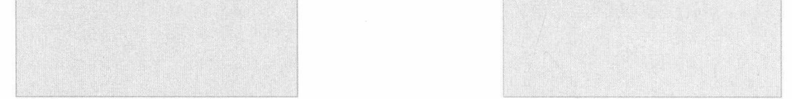
图 6-18 禁用状态下的图标
6.6.3 示例：QPushButton的“开关”图标
由于 QCheckBox、QRadioButton 组件在绘制图标时忽略 QIcon.State 的值，所以要为 On、Off状态加载不同的图标，只能在QPushButton组件上有效。
本示例的主要代码如下：
class DemoWindow(QWidget):
def __init__(self, parent: QWidget = None):
super().__init__(parent)
self.setWindowTitle("Demo")
#布局
layout = QVBoxLayout()
self.setLayout(layout)
#创建图标
icon = QIcon()
#选择状态下要显示的图标
icon.addFile("star-on.png", QSize(), QIcon.Mode.Normal, QIcon.State.On)
#未选择状态下要显示的图标
icon.addFile("star-off.png", QSize(), QIcon.Mode.Normal, QIcon.State.Off)
#三个按钮
for i in range(0, 3):
btn = QPushButton(f"按钮-{i + 1}", self)
btn.setCheckable(True)
btn.setIcon(icon)
layout.addWidget(btn)注意每个 QPushButton 组件都要调用 setCheckable 方法，设置 checkable 属性为 True，这样按钮才会具有“开关”状态。
QIcon对象中引用了两个图像文件，当按钮处于“开”的状态时显示 star-on.png文件，当按钮处于“关”的状态时就显示 star-off.png 文件。
运行示例程序后，其初始状态如图6-19所示。
单击按钮，使其切换为Checked状态（On状态)，按钮上会显示彩色的图标，如图6-20所示。
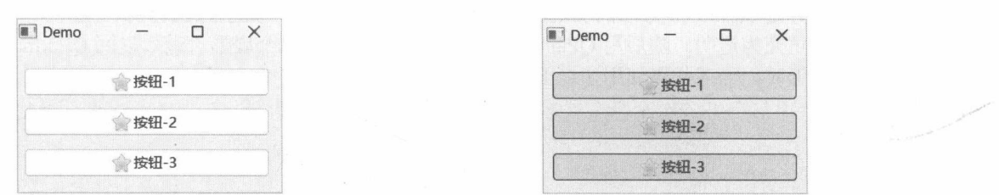
图 6-20 按钮处于 Checked 状态时显示的图标
6.6.4 示例：手动绘制图标
将 QPixmap 实例传递给 QIcon 类的构造函数，可以初始化图标。而 QPixmap 派生自 QPaintDevice 类。因此，可以用 QPainter 类在 QPixmap 对象中绘制图标，然后再用 QPixmap 对象去初始化 QIcon 实例。最后调用按钮组件的 setIcon 方法设置图标。也可以将 QPixmap 对象直接传递给 setIcon 方法。
本示例将使用QPixmap 对象来手动绘制图标。DemoWindow类的实现代码如下：
class DemoWindow(QWidget):
def __init__(self):
super().__init__()
#布局
layout = QHBoxLayout(self)
#创建按钮
btnA = QPushButton("按钮1", self)
btnB = QPushButton("按钮 2", self)
#创建和使用图标
theIcon = self.buildIcon()
btnA.setIcon(theIcon)
btnB.setIcon(theIcon)
#将按钮添加到布局
layout.addWidget(btnA)
layout.addWidget(btnB)
def buildIcon(self):
pxmap = QPixmap(32, 32)
#填充透明背景
pxmap.fill(QColor('transparent'))
#开始绘图
painter = QPainter()
painter.begin(pxmap)
painter.setPen(QPen(QColor('transparent'), 0.0))
#设置画刷
painter.setBrush(QColor('blue'))
#画一个正圆
rectEl = QRect((pxmap.width() - 8) / 2, 0, 8, 8)
painter.drawEllipse(rectEl)
#换一个画刷
painter.setBrush(QColor('gold'))
#画一个扇形
rectPie = QRect(0, 10, pxmap.width() - 2, pxmap.height())
painter.drawPie(rectPie, 90 * 16, 90 * 16)
#画第二个扇形
rectPie.setX(2)
painter.drawPie(rectPie, 0 * 16, 90 * 16)
painter.end()
#生成图标对象并返回
return pxmap核心部分是buildIcon方法的实现。首先创建QPixmap实例，大小为32×32。调用fill方法将图像的背景颜色填充为透明。随后用QPainter对象绘制一个正圆和两个扇形。最后返回QPixmap实例。
绘制扇形时，上述代码使用了以下签名的drawPie方法。
def drawPie(
arg__1: QRect,
a: int,
alen: int
):参数a表示扇形的初始角度，而alen参数是指扇形要跨越的度数。
假设初始角度为30°，跨度为60，那么扇形的终止角在30°+60°=90°。
另外还要注意的是参数a、alen表示的单位是（1/16）°，即 a=16为1°。
所以，若初始角度为30°，那么a的值应该是30×16=480。
示例运行效果如图6-21所示。
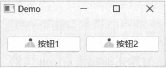
按钮与快捷键
按钮组件的 shortcut 属性（对应方法成员为 shortcut 和 setShortcut）用于设置关联的快捷键。快捷键由按键序列对象QKeySequence描述，在调用其构造函数时，可以直接使用字符串来指定快捷键（不区分大小写)，如 Ctrl+H、Alt+W等；也可以用 Qt.Modifier 和 Qt.Key的组合来表示快捷键，如 Qt.Modifier.SHIFT | Qt.Key.Key_D，即 Shift+D。
下面的代码在自定义窗口中创建两个按钮组件，并指定各自的快捷键。
class MyWindow(QWidget):
def __init__(self):
super().__init__()
self.setWindowTitle("Demo")
self.resize(280, 160)
#布局
layout = QVBoxLayout(self)
#创建第一个按钮
btn1 = QPushButton("方案-【Ctrl+M】", self)
#设置快捷键
btn1.setShortcut(QKeySequence("Ctrl+M"))
#处理clicked信号
btn1.clicked.connect(self.onclicked1)
#添加到布局
layout.addWidget(btn1)
#创建第二个按钮
btn2 = QPushButton("方案二【Alt+E】",self)
#设置快捷键
btn2.setShortcut(QKeySequence(Qt.Modifier.ALT | Qt.Key.Key_E))
#处理clicked信号
btn2.clicked.connect(self.onclicked2)
#添加到布局
layout.addWidget(btn2)
#第一个按钮被单击后触发
def onclicked1(self):
QMessageBox.information(self, "消息", "你选择了【方案一】")
#第二个按钮被单击后触发
def onclicked2(self):
QMessageBox.information(self, "消息", "你选择了【方案二】")第一个按钮的快捷键为Ctrl+M，第二个按钮的快捷键为Alt+E。在为第一个按钮设置快捷时，将描述快捷键的字符串直接传递给QKeySequence构造函数。代码如下：
QKeySequence("Ctrl+M")在设置第二个按钮的快捷键时，通过ALT和Key_E的组合来描述快捷键。代码如下：
QKeySequence(Qt.Modifier.ALT | Qt.Key.Key_E)当窗口处于活动状态时，按下快捷键的效果等同于单击行为，并且按钮被触发后会发出clicked信号，如图6-22所示。
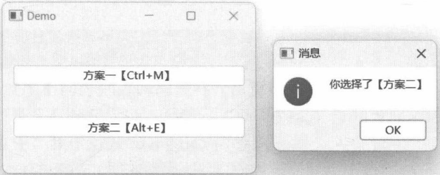